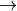
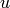
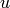
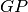
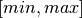
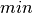
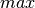
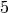
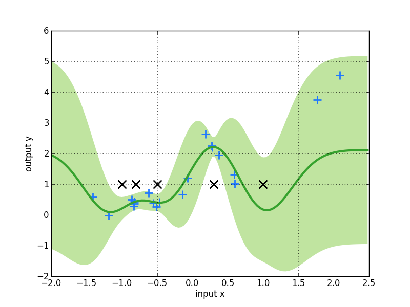
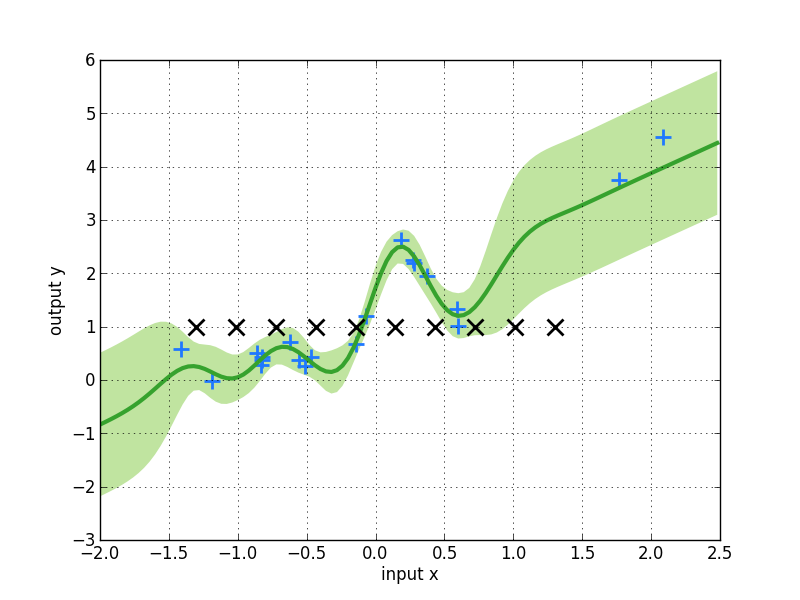

Sparse Regression¶
The code shown in this tutorial can be obtained by running pyGPs/Demo/demo_GPR_FITC.py This demo is more or less similar to the demo of FITC classification.
First example  default inducing points¶
First load the same data as in the GPR demo.
[Theory]
In case the number of training inputs  exceeds a few hundred, approximate inference using Laplace approximation or expectation propagation takes too long. We offer the FITC approximation
based on a low-rank plus diagonal approximation to the exact covariance to deal with these cases. The general idea is to use inducing points
 and to base the computations on cross-covariances between training, test and inducing points only.
exceeds a few hundred, approximate inference using Laplace approximation or expectation propagation takes too long. We offer the FITC approximation
based on a low-rank plus diagonal approximation to the exact covariance to deal with these cases. The general idea is to use inducing points
 and to base the computations on cross-covariances between training, test and inducing points only.
Okay, now the model is FITC regression:
model = gp.GPR_FITC()
The difference between the usage of basic  regression is that we will have to specify inducing points. In the first example here, we will introduce you how to use the default settings.
The default inducing points are a grid (hypercube for higher dimensions), where each dimension has 5 values in equidistant steps in , where  and  are the minimum and maximum values of the input data by default. In order to specify the dimension of input data, we HAVE TO set data first:
model.setData(x, y)
The number of inducing points per axis is  per default.
Now, the regular training and prediction routines follow:
model.train()
model.predict(z)
model.plot()

The equidistant default inducing points that are shown in the figure as black x’s.
To change the number of inducing points per axis just specify a different value per axis:
model.setData(x, y, value_per_axis=10)
Second example user-defined inducing points¶
Alternatively, a random subset of the training points can be used as inducing points. Note, that there are plenty of methods to set these inducing points. So, in the second example let us use a user-defined set of inducing points.
You can pick a set of fixed inducing points by hand:
u = np.array([[-1], [-0.8], [-0.5], [0.3],[1.]])
You can also use equidistant inducing points , but without the values on the margin of the grid.(i.e. shrinking the range of values)
num_u = np.fix(x.shape[0]/2)
u = np.linspace(-1.3,1.3,num_u).T
u = np.reshape(u,(num_u,1))
Then pass when specifying prior.
m = mean.Zero()
k = cov.RBFard(log_ell_list=[0.05,0.17], log_sigma=1.)
model.setPrior(mean=m, kernel=k, inducing_points=u)
The left figure below shows the result of fixed inducing points, and the right figure shows the result for equidistant .
 [Theory] Note that the predictive variance is overestimated outside the support of the inducing inputs. In a multivariate example where densely sampled inducing inputs are infeasible, one can also try to simply use a random subset of the training points.
A bit more things you can do¶
Switch to other Inference and Likelihood functions.
model.useInference("EP")
model.useLikelihood("Laplace")